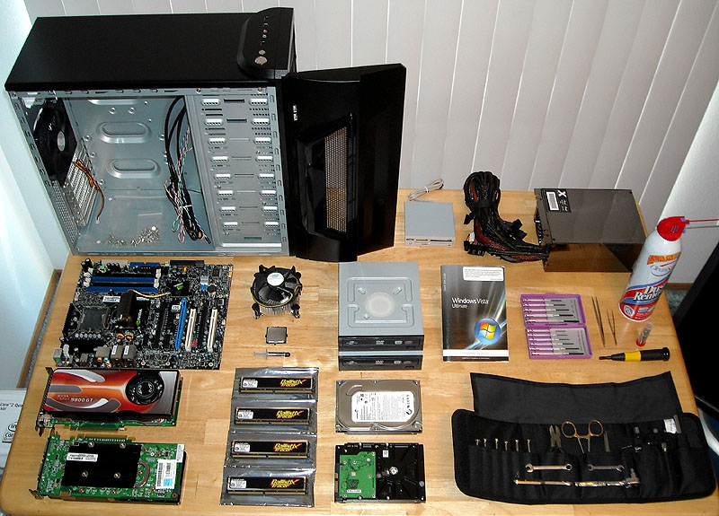

Why Build a Computer?

Good question. In today's retail market, PC's have become significantly cheaper and
their performance have improved enough that buying from retail is a good choice.
But building a computer still has its advantages.
- Better parts. Retail PCs will most most likely go for low-end version of the parts.
Certain parts might be slighlty lower in performance, like the GPU (graphics processing
unit). When you pick your parts, you will get exactly the parts that meet the
perfomance needs. Motherboards in retail PCs might have little room for upgrades. The
motherboard you pick will determine what other peripherals you can later add, such as
wi-fi cards and extra GPUs.
- PSU. When you decide to upgrade the GPU or CPU, retail PSUs (power supply unit)
might not support the upgrade.
- Proper cooling. Get the right CPU fan or liquid cooling for your PC. Your computer
will be much quieter.
- Longer warranties. Parts typically come with longer warranties. Some, with a
lifetime warranty.
- Nicer cases. Choose your own case. Get a wild or a minimal case. Or modify an
existing one, like the Apple G5 (a popular case PC enthusiast modify).
- You'll have fun while gaining more knowledge and putting things together.
The Parts
Below are the most important parts you will need.
- CPU (central processing unit). The brain of the computer.
- MOBO (motherboard). All your components are installed on the motherboard.
- RAM (random access memory). Used short term memory. Determines how fast you can
access and run mutiple processes.
- GPU (graphic processing unit). Runs multiple taks relating with graphics like 3-D
models and video processing.
- Storage. The HDD (hard drive disks) and SSD (solid state drive) saves and retrieves
any information/files you keep in your computer. The SSD will be much faster with
reading and writing of data.
- PSU (power supply unit). Keeps all your components powered and running.
Resources
Worried if the components being compatible with each other? Use
pcpartpicker.com to pick your PC parts.
Newegg computer build video
tutorial.